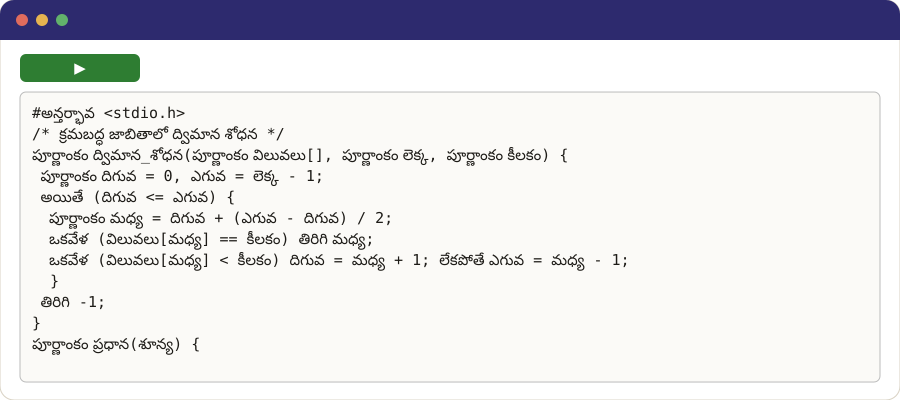

తెలుగు
Programming in your own language
Shaili Robot
Write what the robot should do, or tap the buttons. In Simple, the first letter of a word is enough.
Your language in the IDE

The notebook for this language
A notebook is a page where you write a program and run it, one cell at a time. Colab, Google's notebook service, runs it in your browser, even on a phone, with nothing to install: open it, press ▶ on Installation, then try the programs.
Examples in every style (shaili)
C✓ built and ran
#అన్తర్భావ <stdio.h>
/* క్రమబద్ధ జాబితాలో ద్విమాన శోధన */
పూర్ణాంకం ద్విమాన_శోధన(పూర్ణాంకం విలువలు[], పూర్ణాంకం లెక్క, పూర్ణాంకం కీలకం) {
పూర్ణాంకం దిగువ = 0, ఎగువ = లెక్క - 1;
అయితే (దిగువ <= ఎగువ) {
పూర్ణాంకం మధ్య = దిగువ + (ఎగువ - దిగువ) / 2;
ఒకవేళ (విలువలు[మధ్య] == కీలకం) తిరిగి మధ్య;
ఒకవేళ (విలువలు[మధ్య] < కీలకం) దిగువ = మధ్య + 1; లేకపోతే ఎగువ = మధ్య - 1;
}
తిరిగి -1;
}
పూర్ణాంకం ప్రధాన(శూన్య) {
పూర్ణాంకం విలువలు[] = {2, 5, 8, 12, 16, 23, 38, 56, 72, 91};
రాయి("%d %d\n", ద్విమాన_శోధన(విలువలు, 10, 23), ద్విమాన_శోధన(విలువలు, 10, 7));
తిరిగి 0;
}
C++✓ built and ran
#అన్తర్భావ <cstddef>
// ద్విమాన శోధన వృక్ష తరగతి, సి++ లో
#అన్తర్భావ <iostream>
తరగతి శోధన_వృక్షం {
నిర్మాణం వృక్ష_కణుపు { పూర్ణాంకం కీలకం; వృక్ష_కణుపు *ఎడమ = ఖాళీ, *కుడి = ఖాళీ; };
వృక్ష_కణుపు *మూలం = ఖాళీ;
వృక్ష_కణుపు *చొప్పించు(వృక్ష_కణుపు *కణుపు, పూర్ణాంకం కీలకం) { ఒకవేళ (!కణుపు) { కణుపు = కొత్త వృక్ష_కణుపు; కణుపు->కీలకం = కీలకం; తిరిగి కణుపు; } ఒకవేళ (కీలకం < కణుపు->కీలకం) కణుపు->ఎడమ = చొప్పించు(కణుపు->ఎడమ, కీలకం); లేకపోతే కణుపు->కుడి = చొప్పించు(కణుపు->కుడి, కీలకం); తిరిగి కణుపు; }
శూన్య మధ్యక్రమం(వృక్ష_కణుపు *కణుపు) { ఒకవేళ (!కణుపు) తిరిగి; మధ్యక్రమం(కణుపు->ఎడమ); std::బయటకు << కణుపు->కీలకం << " "; మధ్యక్రమం(కణుపు->కుడి); }
బహిరంగ:
శూన్య చొప్పించు(పూర్ణాంకం కీలకం) { మూలం = చొప్పించు(మూలం, కీలకం); }
శూన్య print() { మధ్యక్రమం(మూలం); std::బయటకు << std::పంక్తి_ముగింపు; }
};
పూర్ణాంకం ప్రధాన() { శోధన_వృక్షం వృక్షం; పూర్ణాంకం కీలకాలు[] = {5, 3, 8, 1, 4}; కొరకు (పూర్ణాంకం కీలకం : కీలకాలు) వృక్షం.చొప్పించు(కీలకం); వృక్షం.print(); తిరిగి 0; }
Python✓ built and ran
# ద్విమాన శోధన, పైథాన్ లో
నిర్వచనం ద్విమాన_శోధన(విలువలు, కీలకం):
దిగువ, ఎగువ = 0, పొడవు(విలువలు) - 1
అయితే దిగువ <= ఎగువ:
మధ్య = (దిగువ + ఎగువ) // 2
ఒకవేళ విలువలు[మధ్య] == కీలకం:
తిరిగి మధ్య
ఒకవేళ విలువలు[మధ్య] < కీలకం:
దిగువ = మధ్య + 1
లేకపోతే:
ఎగువ = మధ్య - 1
తిరిగి -1
ముద్రించు(ద్విమాన_శోధన([2, 5, 8, 12, 16, 23, 38], 23), ద్విమాన_శోధన([2, 5, 8], 7))
Java✓ lowered to its host language
// దొంతర తరగతి, జావాలో
బహిరంగ తరగతి దొంతర {
అంతరంగ పూర్ణాంకం[] వస్తువులు = కొత్త పూర్ణాంకం[16];
అంతరంగ పూర్ణాంకం శిఖరం = 0;
బహిరంగ శూన్య నెట్టు(పూర్ణాంకం విలువ) { వస్తువులు[శిఖరం++] = విలువ; }
బహిరంగ పూర్ణాంకం తీయి() { తిరిగి వస్తువులు[--శిఖరం]; }
బహిరంగ స్థిర శూన్య ప్రధాన(పదబంధం[] వాదనలు) {
దొంతర వస్తువులు = కొత్త దొంతర();
కొరకు (పూర్ణాంకం విలువ = 1; విలువ <= 3; విలువ++) వస్తువులు.నెట్టు(విలువ * 10);
వ్యవస్థ.బహిర్గతం.పంక్తి_ముద్రించు(వస్తువులు.తీయి() + " " + వస్తువులు.తీయి());
}
}
BASIC✓ lowered to its host language
20 కొరకు సంఖ్య = 2 వరకు 29
30 అనుకో ప్రధానసంఖ్య = 1
40 కొరకు భాజకం = 2 వరకు సంఖ్య - 1
50 ఒకవేళ సంఖ్య శేషం భాజకం = 0 అప్పుడు అనుకో ప్రధానసంఖ్య = 0
60 తదుపరి_చక్రం భాజకం
70 ఒకవేళ ప్రధానసంఖ్య = 1 అప్పుడు ముద్రించు సంఖ్య
80 తదుపరి_చక్రం సంఖ్య
90 ముగింపు
Lex✓ built and ran
%{
#అన్తర్భావ <stdio.h>
పూర్ణాంకం పదాలు = 0, పంక్తులు = 0;
%}
%%
[a-zA-Z]+ { పదాలు++; }
\n { పంక్తులు++; }
. { }
%%
పూర్ణాంకం yywrap(శూన్య) { తిరిగి 1; }
పూర్ణాంకం ప్రధాన(శూన్య) { yylex(); రాయి("%d words, %d lines\n", పదాలు, పంక్తులు); తిరిగి 0; }
Yacc✓ built and ran
%{
#అన్తర్భావ <stdio.h>
#అన్తర్భావ <ctype.h>
పూర్ణాంకం yylex(శూన్య);
శూన్య yyerror(స్థిరరాశి అక్షరం *సందేశం) { fprintf(stderr, "%s\n", సందేశం); }
%}
%token అంకె
%%
ఆదానం: | ఆదానం పంక్తి ;
పంక్తి: '\n' | సమాసం '\n' { రాయి("%d\n", $1); } ;
సమాసం: విలువ | సమాసం '+' విలువ { $$ = $1 + $3; } ;
విలువ: అంకె | విలువ '*' అంకె { $$ = $1 * $3; } ;
%%
పూర్ణాంకం yylex(శూన్య) {
పూర్ణాంకం చిహ్నం = getchar();
అయితే (చిహ్నం == ' ') చిహ్నం = getchar();
ఒకవేళ (అంకెనా(చిహ్నం)) { yylval = చిహ్నం - '0'; అయితే (అంకెనా(చిహ్నం = getchar())) yylval = yylval * 10 + చిహ్నం - '0'; ungetc(చిహ్నం, stdin); తిరిగి అంకె; }
తిరిగి చిహ్నం == EOF ? 0 : చిహ్నం;
}
పూర్ణాంకం ప్రధాన(శూన్య) { తిరిగి yyparse(); }